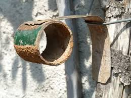

Certi esperimenti costano tempo, denaro e fatica... certi altri non costano proprio nulla...
L'esperimento di oggi fa parte a pieno titolo di questa seconda categoria.
Ho voluto verificare, a tempo perso ed in forma eclatante, il fenomeno della corrosione elettrochimica.
Quando due metalli diversi vengono posti a contatto in presenza di un elettrolita (cioè una soluzione acquosa) si genera un flusso di elettroni (in pratica si forma una pila) che vanno dal metallo meno nobile verso quello più nobile .
Perdere elettroni vuol dire "ossidarsi", acquistare elettroni vuol dire "ridursi".
Ogni metallo possiede una sua ben definita "nobiltà", più o meno come gli umani di qualche decennio fa: ci sono addirittura metalli "di sangue reale o imperiale" (Loro Maestà l'oro, il platino, l'iridio...), poi metalli con parecchio sangue blù, come il mercurio, l'argento, il rame..., poi viene la borghesia ed infine il popolo: il piombo, lo stagno, il ferro, lo zinco...
Scivolando sempre più verso il basso, troveremo alla fine la vera plebe: il magnesio, il sodio, il litio... questi ultimi dei veri paria nella serie elettrochimica.
Sia ben chiaro che questo elenco "dei ricchi e dei poveri" si riferisce solo ed esclusivamente alla facilità o meno con cui questi metalli possono cedere elettroni, e a null'altro!
I più nobili sono anche i più tirchi: cercano di tenerseli tutti ben stretti i loro elettroni.
Come tanti matrimoni, se le differenze di condizione sociale sono troppo elevate, è molto probabile che prima o poi il matrimonio si sfasci (per gli umani succede anche per molto meno!).
Allora, mettendo in contatto due metalli molto "diversi", uno vorrà perdere elettroni e l'altro vorrà prenderseli, a spese del primo; perchè l'intermediazione vada a buon fine serve però un terzo incomodo, come dicevo all'inizio, cioè l'elettrolita; ma per questo non c'è problema: basta una leggera traccia di umidità e la soluzione per gli ioni è bell'e pronta.
L'esperimento
Basta ciance, procediamo.
I due metalli che ho costretto a convivere forzatamente (matrimonio di convenienza, non di amore) sono il rame ed il ferro.
Il primo è elettropositivo (è un seminobile nella serie elettrochimica, +0,34 V)), il secondo è un vile plebeo elettronegativo che sperpera volentieri i propri elettroni (-0,45 V).
Ho preso uno spezzone di tubo di ferro verniciato, l'ho abraso per bene con la lima nel punto di unione col rame ed in qualche altro punto, in modo che fosse perfettamente pulito e lucente.
Ho fatto la stessa operazione con una bandella di rame, ed ho poi fissato quest'ultima al tubo tramite un foro passante ed un rivetto stretto con l'apposita pinza.
In questo modo il contatto elettrico tra i due metalli è sicuramente perfetto.
Ho poi simulato una condizione reale interrando per metà l'oggetto sotto una pianta di rose rampicanti, la cui terra era tenuta qualche volta umida dalla pioggia o dalle occasionali annaffiature.

Ecco fatta una bella pila: c'è il polo positivo (il rame), il polo negativo (il ferro), l'elettrolita (l'acqua e le soluzioni saline della terra).
Ho misurato la tensione a vuoto tra gli elettrodi in condizioni reali prima di porli in contatto: 0,30 volt con terreno umido.
Ho lasciato semisepolto questo accrocco nella terra per nove mesi, ed ecco i risultati come si vedono in foto.
Il rame naturalmente è intatto (a parte una ovvia ossidazione superficialissima) mentre il ferro si è corroso pesantemente, ricoprendosi nei punti non protetti dalla vernice di ruggine profonda (ossido idrato di ferro).
Se non fosse stato a contatto del rame si sarebbe ossidato lo stesso, ma in maniera molto più leggera.
Morale della favola?
Non c'era proprio niente da scoprire, se non mettere il naso che tra due metalli in contatto quello più elettropositivo si salva, a scapito di quello più elettronegativo, che si ossida anche per l'altro.
E' quello che si fa di solito in pratica per certe opere metalliche interrate, come per esempio le bombole per il GPL ampiamente usate in zone rurali: le si collega ad un anodo in magnesio interrato, il quale, essendo molto elettronegativo (-2,37 V), si corroderà sacrificando lentamente se stesso e salvando la struttura molto più costosa.
Non per niente quello di magnesio si chiama "anodo sacrificale"...
Talvolta in grandi opere si giunge perfino a controbilanciare le correnti di origine elettrochimica con degli appositi alimentatori, collegando al polo negativo la grande struttura da proteggere ed al positivo un anodo di ferro sacrificale piantato profondamente nel terreno.
2 commenti